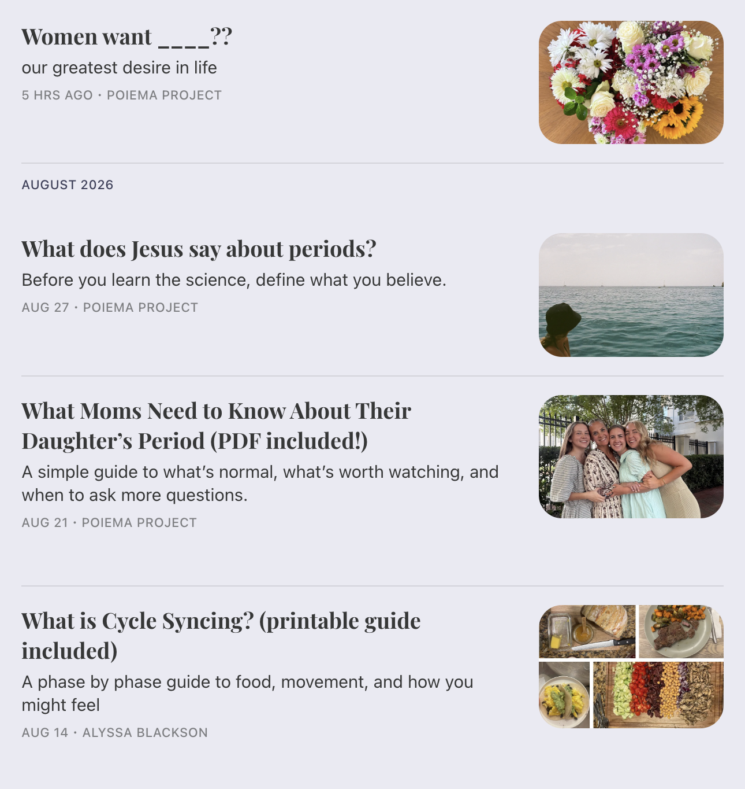

Founder, Poiema Project
Hi, I'm Alyssa.
I'm the founder of Poiema Project and Rooted Rhythm. I'm graduating from Samford University in May 2027 with degrees in Marketing and Entrepreneurship, which is a pretty fitting combination for someone who always seems to be building something.
I care deeply about helping women understand their bodies so they can make informed decisions about their health. Right now, that looks like researching, writing, building resources, working toward certification in women's health, and figuring out how to get better health education into the places women already are.
I did not grow up planning to work in women's health.
I grew up playing sports, working hard, and assuming I understood my body pretty well. College made me realize how much I did not know.
I started learning more about nutrition, hormones, cycles, stress, and how much our everyday choices affect the way we feel. Pretty quickly, my questions became less about my own health and more about why no one had taught us any of this.
Then I started asking my friends.
That might have been the point of no return.
I realized how many women my age did not understand their cycles, hormones, or some of the health decisions they had been making for years. Most of us had been taught what to do when something went wrong. Very few of us had been taught how our bodies worked in the first place.
The information existed. Finding it, understanding it, and figuring out who to trust was a different story.
I could not stop thinking about that.
So I started Poiema Project.
I wanted to help women understand their bodies before they had to make decisions about them.
ποίημα
poe-ee-ma
Poiema comes from the Greek word used in Ephesians 2:10 for God's workmanship or masterpiece. That word became the frame for how I think about this work.
Every woman is intentionally made by God. Her body has value. She deserves the opportunity to understand it and care for it well.
I'm still early in this, which is part of the fun.

I'm working toward certification in women's health, building Rooted Rhythm, meeting with women one on one, exploring health education for schools, and developing wellness programs for organizations.
I'm starting with what I know how to do right now and continuing to learn from there.
Interested in working together?
Work With Us